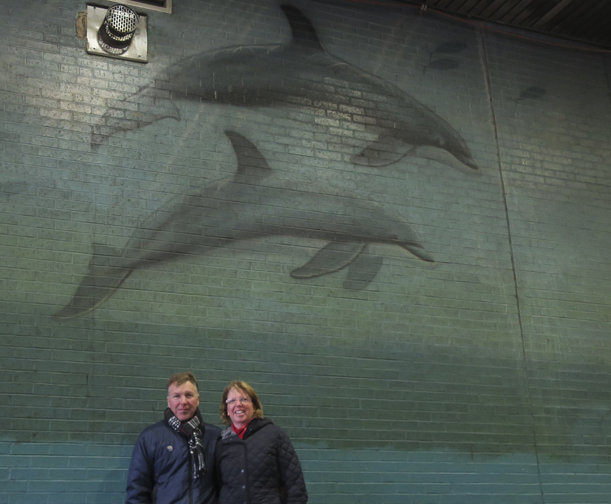

In Search of Wyland Walls

New York is a festive place to visit at Christmas. While the purpose of the visit was to take in the holiday decorations we could not pass up the opportunity to see “Inner City Whales” in the tunnel of the bus station.
Being located in a place dedicated to bus traffic has taken its toll on this mural, as has various construction projects, and we were glad to see it before it deteriorated further. Due to construction equipment we could only see about two-thirds of it but what we could see what worth seeing.
Port Authority Bus Terminal
41 Street Underpass
New York, New York
460 Feet Long x 22 Feet High
Dedicated July 5th, 1993
Excerpt from @wylandfoundation on Instagram
Selecting and gaining approval to paint a Whaling Wall in New York City presented a new set of challenges that could only be found in The Big Apple. Wyland had initially selected the “perfect” wall at the Jacob Javitts Convention Center, but the site fell through when the World Trade Center was suddenly bombed by terrorists. The Port Authority of New York, whose vent tower was located at the convention center, then decided the Whaling Wall might become targeted by the terrorists.
However, they helped Wyland’s team find another wall at the Port Authority Bus Terminal on the 41st Street underpass. “This area was one of the worst in the city,” Wyland says. “Crime, drugs, winos, prostitution – it was horrible. I felt the real challenge was going to be how I could add something positive to such a dreary environment.”
With his crew watching his back, the artist quickly painted humpback whales swimming along the low 450-foot-long tunnel between the two terminals. The mural was showcased by all three major networks, including The Today Show and Good Morning America.
“The attention this mural drew was tremendous,” Wyland acknowledges. “A lot of people will see it every day. The only thing I would change about it, though, would be the lighting. I hope the Port Authority will one day replace the dim, yellow lights in that tunnel with lights that’ll really enhance this beautiful mural in the inner city.”